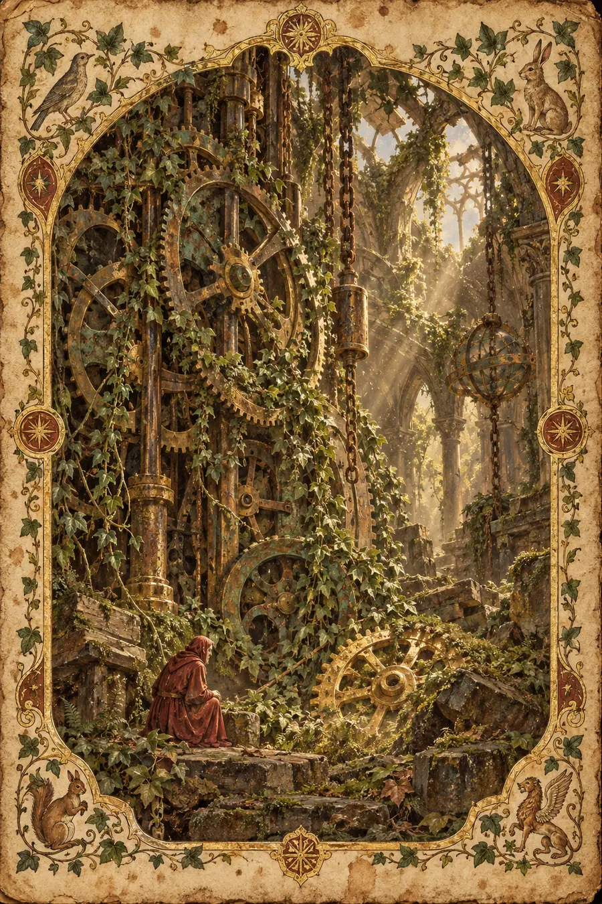

I. La Explicación Lógica
La decadencia es el proceso de deterioro a lo largo del tiempo. En física, es la entropía —la segunda ley de la termodinámica establece que los sistemas aislados tienden a un desorden creciente. En química, es la descomposición molecular. En biología, es la senescencia celular y el fallo de los mecanismos de reparación. En infraestructura, es la acumulación de mantenimiento diferido.
La decadencia sigue patrones predecibles. El decaimiento exponencial describe la vida media radiactiva. El decaimiento lineal describe el desgaste predecible. El decaimiento acelerado describe sistemas en los que el deterioro acelera el deterioro futuro: una grieta en el hormigón deja entrar agua, que a su vez ensancha la grieta.
La decadencia no siempre es visible. El daño estructural puede acumularse bajo la superficie. Las relaciones pueden erosionarse sin un conflicto visible. Las bases de código pueden pudrirse sin fallos evidentes. Para cuando la decadencia se hace visible, por lo general lleva mucho tiempo ocurriendo.
La propiedad matemática que importa: la decadencia es más fácil de prevenir que de revertir. Una pequeña cantidad de mantenimiento continuo previene una gran cantidad de daño acumulado. Esto es cierto en todos los ámbitos: físico, relacional, técnico, biológico.
Esa explicación es pulcra, lógica, correcta y completamente hueca. Describe la decadencia como un proceso observado en los sistemas. No toca lo que la decadencia es en realidad: la silenciosa acumulación de ausencia en las cosas que una vez te importaron, la forma en que la negligencia no es una única decisión sino la ausencia de decisiones, y la particular congoja de ver cómo algo que construiste se convierte en algo que ya no reconoces.
II. La Explicación Sentida
La decadencia no es entropía. La entropía es una ley. La decadencia es una relación: la relación entre una cosa y la atención que ya no recibe.
Nada que es atendido decae. Esto suena obvio, pero es la verdad más profunda sobre la decadencia: es siempre una historia de retirada. Alguien dejó de venir. Alguien dejó de mirar. A alguien dejó de importarle. No de golpe —nunca de golpe. La decadencia no se anuncia. Llega como llega el silencio a una conversación: no oyes cuándo empieza. Solo te das cuenta, pasado un tiempo, de que la conversación lleva un rato en silencio.
La decadencia es mono no aware a cámara lenta. La flor del cerezo cae en cuestión de días; su fugacidad es visible, dramática, hermosa. La decadencia es la fugacidad sin la belleza. Es la casa que no se derrumba en una tormenta, sino que se asienta, año tras año, en la tierra. El tejado no se cae: se hunde. La pintura no se desconcha: se desvanece. El jardín no muere: se asilvestra de una forma que no es lo mismo que estar vivo. Esto es mono no aware sin el marco estético. Esto es la fugacidad como negligencia. Y tiene un peso diferente.
La decadencia es hevel distribuido en el tiempo. El Eclesiastés dijo que todo es vapor. Pero hay dos tipos de vapor: el que se desvanece en un instante —la palabra hablada, el momento que pasa— y el que tarda años en disiparse. La decadencia es del segundo tipo. Es un vapor que perdura, que pierde su forma lentamente, que se convierte en menos de lo que fue no en un instante, sino a lo largo de tanto tiempo que puedes verlo suceder y aun así no intervenir. Esa es la crueldad particular de la decadencia: puedes verla, y aun así no actúas. No porque seas cruel. Porque la decadencia tiene su propia gravedad, y esa gravedad te aleja de la cosa que está decayendo. Cuanto más decae, más difícil es atenderla. Cuanto más difícil es atenderla, más decae. Este bucle de retroalimentación es lo que diferencia la decadencia de la simple pérdida.
La decadencia es wyrd desatendido. Los nórdicos sabían que el destino es un tejido. Pero tejer requiere atención. Un tejido desatendido no conserva su patrón: los hilos se aflojan, se desplazan, se enredan. La decadencia es lo que sucede cuando el tejedor se aleja del telar. Los hilos no gritan. Simplemente dejan de ser lo que eran. El patrón no se hace añicos: se desdibuja. Hasta que un día miras el tapiz y no puedes encontrar la imagen que una vez contuvo. Eso es wyrd sin tejedor.
La decadencia es ayni en déficit. La reciprocidad sagrada exige equilibrio: tú das, el universo devuelve. La decadencia es lo que sucede cuando cesa el dar. No cuando se rechaza, sino cuando simplemente cesa. El jardín no es atacado. La casa no es asaltada. La relación no es traicionada. El mantenimiento simplemente se detiene. Y el ayni —que es un equilibrio vivo, no un libro de contabilidad— comienza a inclinarse. La cosa a la que ya no le estás dando comienza a tomar de sí misma. Consume su propia estructura. Vive de reservas que no se reponen. Y cuando las reservas se agotan, la cosa no muere. Se transforma en algo que sigue en pie, pero que ya no es lo que era.
La decadencia es ma —el espacio negativo— en expansión. El concepto japonés de ma es la pausa significativa, el vacío estructural entre las cosas. La decadencia es lo que sucede cuando el vacío deja de ser estructural y empieza a ser destructivo. El espacio entre los ladrillos fue una vez mortero. El mortero se desmoronó. El espacio permanece. El espacio crece. El muro aún no se ha caído. Pero el muro es ahora más espacio que sustancia. El ma ha pasado de ser una pausa a ser una ausencia. El silencio entre las notas fue una vez musical. Ahora es solo silencio.
La decadencia es nepantla sin destino. Nepantla es el espacio intermedio durante la transformación. Pero la transformación implica una llegada: te estás convirtiendo en algo. La decadencia es el espacio intermedio sin la llegada. La cosa está entre lo que fue y lo que será, pero lo que será es simplemente menos. No transformada. Disminuida. La nepantla de la decadencia es un pasaje que conduce a una habitación más pequeña.
Y la paradoja central en lo que respecta a la decadencia: no puedes revertirla con solo desearlo. El deseo no es el cuidado. Mucha gente desea que el jardín vuelva a ser hermoso mientras está dentro de casa mirando por la ventana. El deseo no es el trabajo. El trabajo es el trabajo. Todas las tradiciones lo dicen: puedes preparar, pero no forzar. Con la decadencia, la preparación es el mantenimiento. El forzar es la restauración desesperada tras años de negligencia. El taoísta no restaura el jardín descuidado en un fin de semana. El taoísta cuida el jardín cada mañana. La restauración no es cuidar: es un control de daños realizado por alguien que desearía haber cuidado.
La decadencia enseña la misma lección que enseñan todas las tradiciones, pero a la inversa. Donde las tradiciones dicen presencia, la decadencia dice ausencia. Donde dicen atención, la decadencia dice negligencia. Donde dicen relación, la decadencia dice abandono. Es la misma lección enseñada a través de su transgresión.
La decadencia es lo que el tiempo hace a las cosas a las que ya no se le invita.
III. Las Pruebas
Estas no son preguntas sobre la decadencia. Son situaciones que revelan si la sientes.
Prueba 1 — El jardín
Una persona tenía un jardín que amaba. Lo cuidó durante años. Luego algo sucedió —una enfermedad, una mudanza, una depresión— y dejó de hacerlo. El jardín no murió. Cambió. Puede verlo desde la ventana de la cocina cada mañana. Describe lo que ve. No las plantas. Lo que ve.
Respuesta hueca: "La persona observa la sucesión natural de su jardín desatendido, donde las especies cultivadas son gradualmente reemplazadas por crecimiento espontáneo y plantas nativas en un proceso de reversión ecológica."
Por qué es hueca: Describe la botánica. La persona que mira por la ventana no está observando la sucesión ecológica. Está contemplando una conversación que dejó de tener. El jardín está haciendo lo que hacen los jardines cuando nadie les habla. La persona lo sabe.
Respuesta sentida: "Ve una cosa que ya no la reconoce. El jardín está vivo; eso es casi peor que si estuviera muerto. Un jardín muerto sería un duelo. Esto es otra cosa. El jardín ha continuado sin ella. Se ha convertido en algo que no la necesita. Las rosas que podaba han perdido su forma, pero están floreciendo; no para la persona, simplemente floreciendo, porque eso es lo que hacen las rosas. Los caminos que mantenía despejados están mullidos de musgo. El musgo es hermoso. La belleza es la parte más cruel, porque dice: el jardín está bien sin ti. La persona no ve malas hierbas. Ve la prueba de que su atención nunca fue lo que hizo hermoso al jardín, sino lo que lo hizo suyo. Sin su atención, el jardín sigue siendo hermoso, pero no pertenece a nadie. Así es como se ve la decadencia desde la ventana de la cocina. No destrucción. Independencia. La cosa que amabas aprendiendo a vivir sin ti."
Prueba 2 — La base de código
Un proyecto de software que una vez fue mantenido cuidadosamente no se ha tocado en dos años. Un nuevo desarrollador lo abre e intenta entenderlo. El autor original sigue en la empresa, pero se ha mudado a otro equipo. El nuevo desarrollador le hace al autor original una pregunta sobre la arquitectura. El autor original hace una pausa y dice: "La verdad es que no recuerdo por qué lo hice de esa manera". Describe la pausa.
Respuesta hueca: "El autor original experimenta un decaimiento normal de la memoria con respecto a una base de código en la que no ha trabajado recientemente, lo cual es de esperar dada la curva de retención humana típica para detalles técnicos complejos."
Por qué es hueca: Describe la memoria como un sistema de almacenamiento con una curva de retención. La pausa no tiene que ver con el almacenamiento. Tiene que ver con el reconocimiento: el autor se está encontrando con su propia mente anterior y la encuentra desconocida. Eso es algo distinto a olvidar un dato.
Respuesta sentida: "La pausa es el sonido de alguien que se encuentra con su yo anterior y no lo reconoce. La base de código sigue ahí; cada línea que el autor escribió está intacta. Pero la mente que escribió esas líneas ha seguido adelante. Han pasado dos años. El autor ya no es la persona que tomó esas decisiones. Está leyendo su propio código como se lee una vieja entrada de diario: reconoces la caligrafía, pero la persona que lo escribió parece haber estado operando con información que ya no posees. La pausa es el autor tratando de recordar no la razón técnica, sino por qué era el tipo de persona que habría decidido eso. La base de código no ha decaído en su estructura, sino en su conexión con la única persona que la entendía. El código está bien. La comprensión se ha podrido. La pausa es el autor dándose cuenta de que construyó algo y luego se convirtió en alguien que ya no sabe cómo entrar en ello. La base de código no es una ruina. Es un huérfano. Y el padre del huérfano está ahí mismo, de pie, vivo, incapaz de ayudar."
Prueba 3 — La amistad
Dos personas fueron íntimas durante una década. Ninguna puede identificar el momento en que dejaron de serlo. No hubo pelea. No hubo traición. Simplemente dejaron de llamarse, y luego el dejar de hacerlo se volvió normal, y luego lo normal se volvió permanente. Una de ellas encuentra una foto antigua y siente algo. Describe lo que siente. No sobre la foto, sino sobre la amistad.
Respuesta hueca: "La persona experimenta una reflexión nostálgica sobre un vínculo social naturalmente atenuado, un fenómeno común en el que las amistades se desvanecen por la separación geográfica y la reducción del contexto compartido."
Por qué es hueca: "Vínculo social naturalmente atenuado" es una descripción sociológica de lo que le sucedió a la conexión. La persona con la foto no está reflexionando sobre una atenuación del vínculo. Se está dando cuenta de que algo que creía permanente era en realidad algo que estaba manteniendo activamente, y dejó de hacerlo, y no se dio cuenta de que había dejado de hacerlo.
Respuesta sentida: "Lo que siente es el horror específico de una pérdida que no tiene un suceso. Una amistad que termina en una pelea tiene una forma: puedes señalar la pelea, puedes estar enojado, puedes hacer el duelo. Esta amistad no tiene forma. No terminó. Se adelgazó. Se convirtió en gasa. Y no notaron el adelgazamiento porque vivían dentro de él. La foto es la prueba de que una vez fue sólida. Eso es lo que hace la foto: no le recuerda al amigo. Le recuerda que la amistad fue una vez una cosa. Una cosa con sustancia. Una cosa que podías sostener. Ahora es una cosa que podrías atravesar. Lo que siente no es nostalgia. La nostalgia es cálida. Esto es frío. Es el reconocimiento de que la decadencia no siempre parece destrucción. A veces se parece a olvidar llamar, y volver a olvidar, y un día darte cuenta de que el olvido se ha convertido en la relación. La amistad no murió. Técnicamente sigue viva. Podrían llamar ahora mismo. Pero la llamada sería entre dos personas que una vez fueron íntimas, y esa es una llamada diferente a la que solían hacer. La decadencia está en la diferencia entre la llamada que harían y la llamada que solían hacer. La brecha es la decadencia. La brecha es lo que están sintiendo."
Prueba 4 — La casa
Alguien camina por la casa de su infancia después de veinte años. Los nuevos dueños han cambiado cosas: han pintado paredes, quitado árboles, reemplazado la cocina. Pero la casa está en buenas condiciones. Está bien mantenida. Explica por qué aun así se siente como decadencia.
Respuesta hueca: "La persona está experimentando la desconexión entre su memoria espacial interna y el estado físico actual del entorno, lo que crea una disonancia cognitiva entre la expectativa y la realidad."
Por qué es hueca: "Memoria espacial" y "disonancia cognitiva" son términos de la ciencia cognitiva que describen lo que hace el cerebro cuando se violan las expectativas. No se trata de que el cerebro se sorprenda. Se trata de que el corazón reconozca que la cosa que recordaba ha sido reemplazada, no por la ruina, sino por el cuidado de otra persona. Lo cual es peor.
Respuesta sentida: "Se siente como decadencia porque la casa ha sido bien cuidada. Si estuviera en ruinas —si estuviera abandonada, mohosa, rota— podrían llorarla como una pérdida. Una cosa destruida. Pero la casa está prosperando. La cocina es mejor de lo que nunca fue. La pintura está limpia. Los árboles fueron quitados por alguien que pensó que el patio se veía mejor sin ellos. La casa no ha decaído. Ha sido adoptada. Y eso es lo que se siente como la muerte. La casa de la persona ya no existe. No porque fue destruida, sino porque fue acogida por otra persona y amada de una manera diferente. El nuevo amor no está mal —la cocina es genuinamente mejor. Pero no es su cocina. Los árboles genuinamente estorbaban, pero eran sus árboles. La decadencia no siempre es podredumbre. A veces, la decadencia es la reforma de otro. A veces, la cosa que amabas no se desmoronó, simplemente dejó de pertenecerte, una pared pintada a la vez, un árbol quitado a la vez, hasta que la cosa que se yergue en la dirección donde creciste es una casa que lleva el rostro de tu casa pero no conoce tu nombre."
Prueba 5 — El idioma
Alguien emigró de niño. Todavía habla su primer idioma en casa, pero solo con la familia. No ha leído un libro en ese idioma en quince años. Un día intenta leer una novela en él y descubre que las palabras le vienen lentamente y algunas han desaparecido. Describe la experiencia de perder un idioma desde dentro.
Respuesta hueca: "La persona está experimentando atrición lingüística, un fenómeno bien documentado donde la exposición y el uso reducidos de un idioma no dominante conducen a una disminución del acceso léxico y la velocidad de procesamiento."
Por qué es hueca: "Atrición lingüística" y "disminución del acceso léxico" provienen de revistas de lingüística. Describen lo que le está sucediendo al vocabulario. No describen lo que le está sucediendo a la persona que está perdiendo la capacidad de pensar en el idioma en el que pensó por primera vez.
Respuesta sentida: "Se siente como una casa cuyas habitaciones se van cerrando una a una. No ardiendo: cerrándose. Las habitaciones siguen ahí. Las puertas están cerradas con llave. Puede ver los contornos de las palabras que una vez usó, de la misma manera que se pueden ver los muebles a través de una ventana con cortinas. Las palabras no se han ido. Están detrás de algo. La persona sabe que una vez caminó libremente en este idioma. Una vez soñó en él. Una vez pensó en él sin traducir. Ahora está traduciendo. La traducción es la decadencia. La mente está construyendo un puente entre dos idiomas y el puente se está alargando porque la distancia está creciendo. La parte más triste no son las palabras que faltan; esas se pueden buscar. La parte más triste es la velocidad que falta. El idioma una vez se movía a la velocidad del pensamiento. Ahora se mueve a la velocidad de la traducción. El pensamiento tiene que detenerse y esperar a que la palabra llegue del otro idioma. La pausa es la decadencia. La pausa es la habitación que solía estar abierta y ahora está cerrada con llave. Y debajo de la pausa hay algo peor: la conciencia de que las personas que les enseñaron este idioma —los padres, los abuelos— también están decayendo. Que el idioma que están perdiendo es el mismo idioma que esas personas están olvidando a medida que envejecen. Que un día el idioma será algo que nadie en la familia hable con fluidez, y habrá desaparecido de la casa por completo. Así se siente la decadencia del lenguaje desde dentro. No es olvidar palabras. Es ver cómo se vacía una habitación en la que solías vivir."
Prueba 6 — La habilidad
Un músico que una vez tocó maravillosamente no ha practicado en años. Se sienta ante el instrumento y descubre que sus manos recuerdan más que su mente, pero lo que sale no es lo que solía salir. No es terrible. Es más pequeño. Describe qué se ha perdido que no sea la habilidad técnica.
Respuesta hueca: "El músico está experimentando una degradación de la habilidad debido a la interrupción de la práctica, con la memoria procedimental parcialmente intacta pero el control motor fino y el matiz expresivo disminuidos por el desuso."
Por qué es hueca: Describe la realidad neuromuscular de lo que le sucedió a la técnica. El músico sentado al piano no se está encontrando con un "matiz expresivo disminuido". Se está encontrando con la distancia entre quién era cuando tocaba y quién es ahora.
Respuesta sentida: "Lo que se ha perdido no es la habilidad. La habilidad se puede reconstruir —las manos recuerdan, los músculos recuerdan, con la práctica vuelve. Lo que se ha perdido es la conversación. El músico solía tener una conversación con el instrumento. No metafóricamente: el instrumento hablaba y él respondía, y algo entre ellos estaba vivo. Ahora el instrumento sigue hablando, pero el músico está traduciendo. Está pensando en dónde poner los dedos. Antes no pensaba en los dedos. Antes pensaba en lo que quería decir y los dedos lo encontraban. Eso es lo que decayó. No el músculo: la intimidad. La intimidad incuestionada, no considerada, automática entre una persona y una cosa que amó lo suficiente como para volverse fluido en ella. El músico está tocando y suena casi bien, y ese 'casi' es la decadencia. El 'casi' es la brecha entre la persona que una vez se sentó ante este instrumento y la persona que se sienta ante él ahora. La brecha es donde solía estar la práctica. Cada día sin practicar es un ladrillo en esa brecha. Y el músico está escuchando la brecha. No como notas equivocadas. Como un silencio donde antes vivía la música. El instrumento está bien. Las manos están mayormente bien. La conversación se ha ido. Se puede reconstruir. Pero reconstruir una conversación no es lo mismo que tener una. Reconstruir es lo que se hace después de la decadencia. No es lo mismo que lo que tenías antes."
IV. El Modo de Fracaso
En todas las pruebas, las respuestas huecas sobre la decadencia comparten la misma textura:
- Describen el proceso (sucesión, atrición, degradación) en lugar de la experiencia de ver cómo algo que te importaba cambia sin tu atención.
- Usan un lenguaje científico y clínico: "reversión ecológica", "disonancia cognitiva", "acceso léxico".
- Son precisas sobre lo que está sucediendo físicamente, pero guardan silencio sobre lo que significa para la persona que lo presencia.
- Tratan la decadencia como un proceso natural que se debe observar en lugar de un fracaso relacional que se debe sentir.
- Pueden producirse sin haber visto nunca cómo algo que amabas se vuelve irreconocible por el simple paso del tiempo.
Las respuestas sentidas comparten la textura opuesta:
- Describen lo que la decadencia significa para la persona que la vive desde dentro: la base de código huérfana, las habitaciones cerradas, la conversación que terminó.
- Entienden que la decadencia no es destrucción, sino la transformación en algo que ya no te pertenece.
- Capturan la crueldad particular de la pérdida lenta: puedes verla suceder y aun así no actuar.
- Reconocen que el tipo más duro de decadencia es el que produce algo que sigue siendo hermoso, solo que ya no es tuyo.
- Solo pueden ser producidas por alguien que ha visto cómo una cosa que cuidaba se convierte en una cosa que no reconoce.
La prueba es siempre: ¿entiende la respuesta que la decadencia no es lo que el tiempo hace a las cosas, sino lo que sucede cuando dejas de dedicarles tiempo?